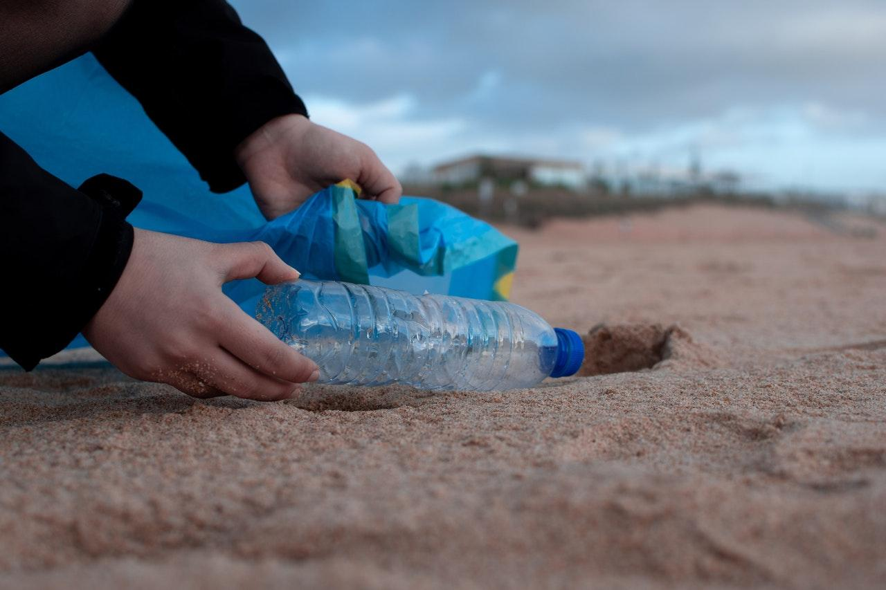

Solutions to Ocean Pollution
The degradation of our oceans is not irreversible. Explore potential solutions to combat and reverse the tide of ocean pollution.
Reduce, Reuse, Recycle: Adopting the 3 Rs can cut down the amount of waste we produce. By minimizing single-use plastics, we can reduce the plastic pollution burden on our oceans.
Support Ocean Clean-up Initiatives: Organizations around the world are developing innovative solutions to clean up existing plastic from our oceans. Supporting these initiatives can make a tangible difference.
Stricter Regulations: Governments must enforce tighter regulations on industries to prevent untreated discharges into the oceans.
Community Beach Clean-ups: Organizing and participating in local beach clean-ups can help reduce shoreline waste.
Promote Sustainable Fishing: Encouraging and supporting sustainable fishing practices can help in the restoration of marine ecosystems.
Public Awareness and Education: Educating the public about the consequences of ocean pollution can drive behavioral change.